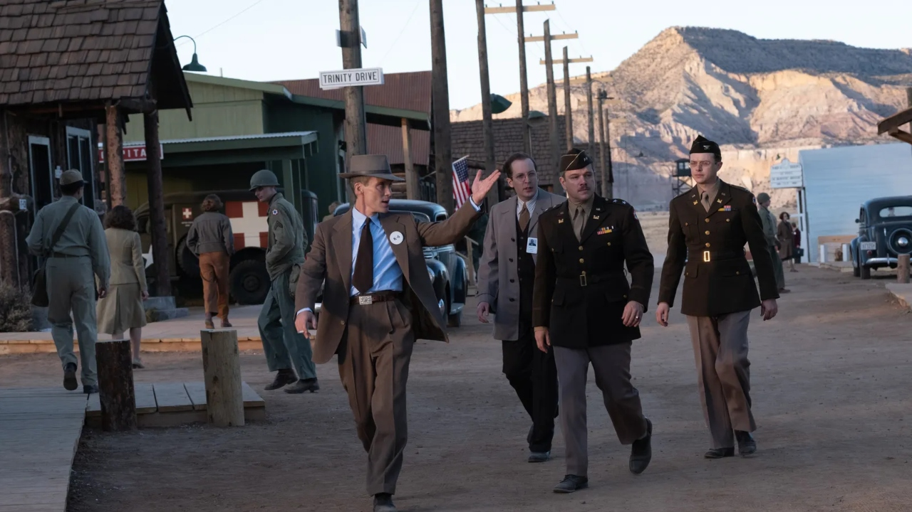
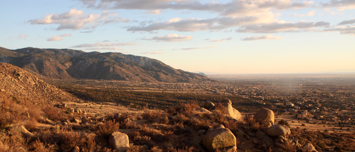
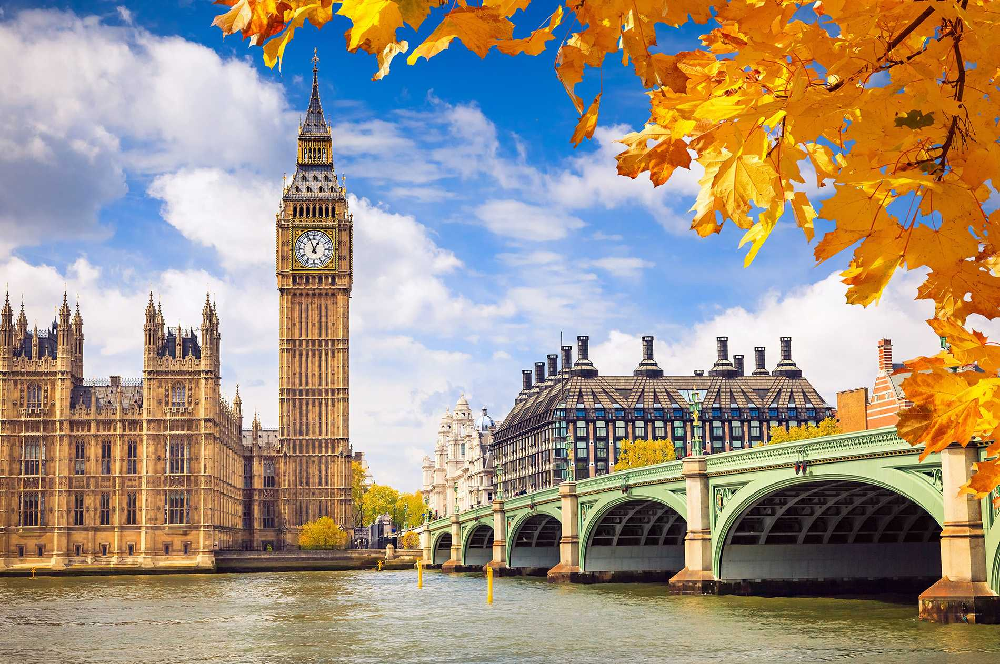

Laboratório Nacional de Los Alamos: Uma das localizações principais para as filmagens, já que Los Alamos foi o epicentro do Projeto Manhattan. Os cientistas, engenheiros e técnicos trabalharam aqui para desenvolver a bomba atômica. A autenticidade do local é essencial para retratar fielmente o ambiente de trabalho dos cientistas durante a criação das armas nucleares.
Bradbury Science Museum: Este museu serve como uma homenagem ao trabalho realizado em Los Alamos durante o Projeto Manhattan e também foi usado como cenário para várias cenas do filme.

Novo México, EUA:
Área do Trinity Test: O deserto do Novo México, onde o teste de explosão da bomba atômica foi realizado em 16 de julho de 1945, foi recriado para capturar o impacto histórico e a magnitude desse momento crítico. O local oferece um cenário vasto e desolado que é crucial para transmitir a magnitude dos experimentos nucleares.
Albuquerque: A cidade de Albuquerque também foi usada como uma base para acomodar a equipe de filmagem e recriar alguns cenários de Los Alamos.

União Soviética e Europa:
Inglaterra: Parte das filmagens aconteceram em várias localizações na Inglaterra para retratar os estágios finais do Projeto Manhattan e o impacto global das decisões tomadas por Oppenheimer. Estúdios como o Shepperton Studios e Pinewood Studios foram usados para recriar cenários de laboratórios, instituições acadêmicas e reuniões políticas.

Estúdios de Filmagem:
Para capturar com precisão a arquitetura e a atmosfera da época, Nolan também utilizou estúdios modernos como Pinewood Studios no Reino Unido. Esses estúdios forneceram espaço para construir sets complexos que recriam laboratórios, salas de conferências e áreas de testes nucleares.